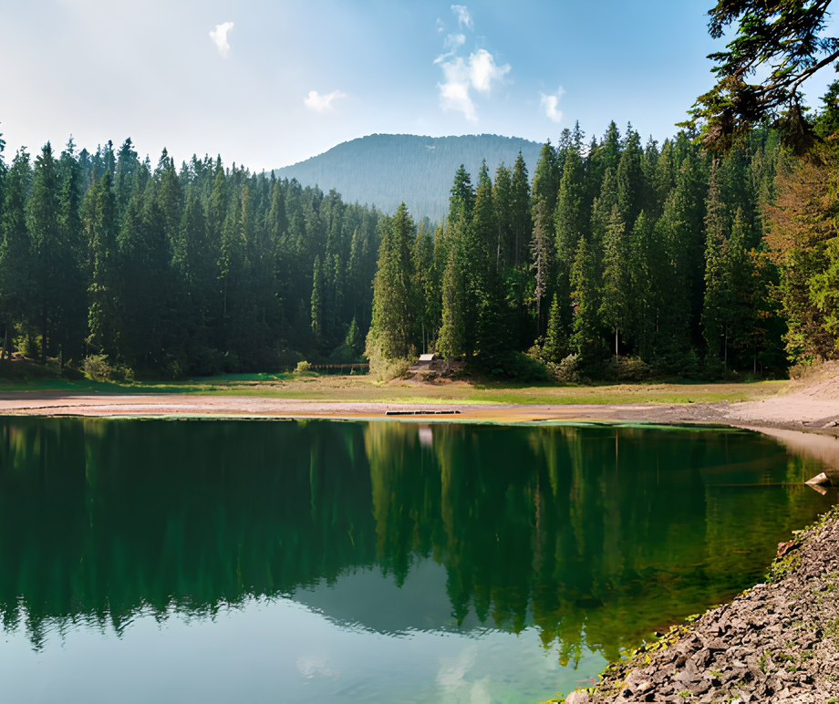
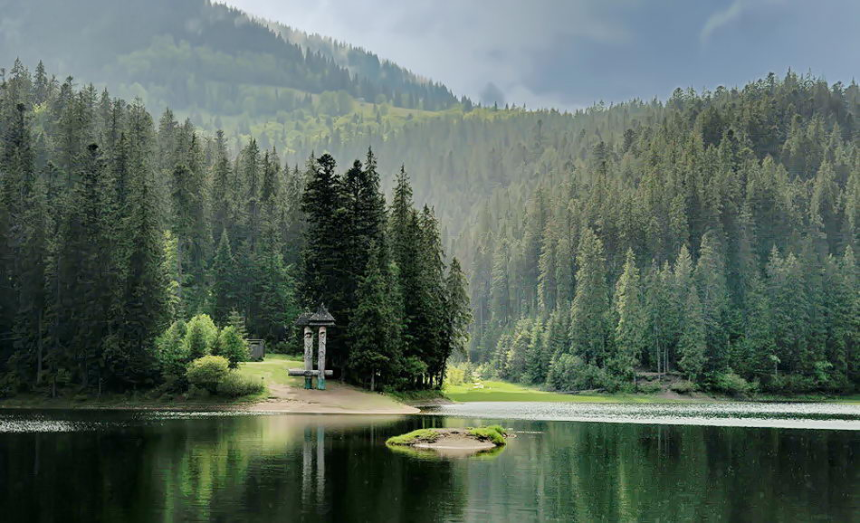

Озеро Синевир – дзеркальне око Карпат
Синевирське озеро славиться на всю Україну і вважається одним з семи
природних чудес нашої країни. Причому цілком заслужено і повністю
виправдано.
Територія озера оточена древнім смерековим лісом, який зберігає в собі
історію людей, які жили тут багато століть назад. Також своєрідну
енергетику, яку просто не можна не відчути на собі в цьому місці.
Озеро знаходиться на висоті майже тисяча метрів над рівнем моря,
а його максимальна глибина досягає двадцяти п’яти метрів.
Купатися тут можна
навіть в теплу пору року, а вода в озері завжди дуже холодна.
Історія Синевира оповита безліччю легенд і приданий,
кожна з яких –
особлива, загадкова, таємнича, але по-своєму романтична. Місцеві
жителі
до цих пір вірять, що якщо між двома людьми тут виникне
любов, то їх
чекає дуже довга і дуже міцна любов.

Легенда про озеро Синевир
Говорять, що кілька сотень років тому жив в гірській місцевості
багатий князь, на якого працювали всі місцеві жителі. Дружина князя
померла
рано, залишивши єдину дочку.
Її очі були такими синіми, що ім’я дівчинці дали Синь.
Росла княжна справжньою красунею і князь дуже нею пишався.
Одного разу вирішив він поїхати в ліс, подивитися, як працюють
піддані,
і взяв з собою у дорогу Синь. Поки князь розмовляв з лісорубами,
княжна
вирішила прогулятися і, збираючи квіти, забрела на лісову галявину.
Прислухавшись, вона вловила звуки красивої мелодії, що награвав
молодий
чабан Вир. Підійшовши ближче, Синь була зачарована його ніжною грою, а
Вир – її красою і синіми, немов весняне небо, очима.
З тих пір молоді люди стали нерозлучні і не могли уявити
подальше життя
один без одного.
Раптово це стало відомо суворому князю. Невимовно обурившись нерівним
вибором своєї дочки, він наказав убити Вира. Вірні слуги дочекалися,
коли хлопець залишився один, і скинули йому на голову величезний
камінь.
Дізнавшись про це, Синь прибігла на місце загибелі улюбленого і довго,
невтішно плакала. Від її сліз утворилося велике озеро, вода в якому
мала
синій відтінок, схожий на колір очей бідної княжни. По центру озера
височів невеликий острівець, ніби верхівка каменю, який впав на Вира.

Maecenas lacinia felis nec placerat sollicitudin.
Quisque placerat dolor at scelerisque imperdiet.
Phasellus tristique felis dolor.
Maecenas elementum in risus sed condimentum.
Duis convallis ante ac tempus maximus. Fusce malesuada sed velit ut
dictum.
Morbi faucibus vitae orci at euismod.
Integer auctor augue in erat vehicula, quis fermentum ex finibus.
Mauris pretium elit a dui pulvinar, in ornare sapien euismod.
Nullam interdum nisl ante, id feugiat quam euismod commodo.
Sed ultrices lectus ut iaculis rhoncus. Aenean non dignissim justo, at
fermentum turpis.
Sed molestie, ligula ut molestie ultrices, tellus ligula viverra
neque,
malesuada consectetur diam sapien volutpat risus.
Quisque eget tortor lobortis, facilisis metus eu, elementum est.
Nunc sit amet erat quis ex convallis suscipit. ur ridiculus mus.
 Ecobazar
Ecobazar